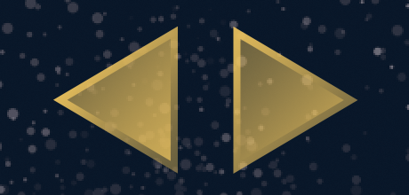

In some apps, you’ll need to perform some continuous action while the user’s touch remains on the screen. This could include a space ship firing its lasers while the player holds down a “fire” button or the
For beginner developers, this process can be elusive, so let’s explore some techniques for implementing continuous actions.
Most games which require continuous actions will also require multitouch, allowing the player to manipulate more than one
As outlined in the Tap/Touch/Multitouch guide, multitouch is disabled by default, but enabling it is simple:
-- Activate multitouch system.activate( "multitouch" )
Depending on your game design, you should carefully consider where this command should be called. While it could be called as one of the first lines within main.lua, that may not be optimal — for instance, if your game begins with a menu scene
Now let’s explore some common elements where continuous actions may apply:

Another common UI element is a virtual directional pad. These usually consist of
Creating a control set like this in Solar2D can be done similarly to the virtual button method above, but in this case, the player will usually keep their finger touched down on the screen in the region of the control pad, simply sliding around (not releasing) to activate another directional button. Thus, in addition to the
This time, let’s use two images
local buttonGroup = display.newGroup()
local leftButton = display.newImageRect( buttonGroup, "leftButton.png", 64, 64 )
leftButton.x, leftButton.y = 60, display.contentHeight-60
leftButton.canSlideOn = true
leftButton.ID = "left"
local rightButton = display.newImageRect( buttonGroup, "rightButton.png", 64, 64 )
rightButton.x, rightButton.y = 136, display.contentHeight-60
rightButton.canSlideOn = true
rightButton.ID = "right"
local groupBounds = buttonGroup.contentBounds
local groupRegion = display.newRect( 0, 0, groupBounds.xMax-groupBounds.xMin+200, groupBounds.yMax-groupBounds.yMin+200 )
groupRegion.x = groupBounds.xMin + ( buttonGroup.contentWidth/2 )
groupRegion.y = groupBounds.yMin + ( buttonGroup.height/2 )
groupRegion.isVisible = false
groupRegion.isHitTestable = true
local function detectButton( event )
for i = 1,buttonGroup.numChildren do
local bounds = buttonGroup[i].contentBounds
if (
event.x > bounds.xMin and
event.x < bounds.xMax and
event.y > bounds.yMin and
event.y < bounds.yMax
) then
return buttonGroup[i]
end
end
end
This code is similar to the virtual button example above, with two very important distinctions:
For each button, we set a boolean canSlideOn property, initially set to true. Because players manipulating a directional pad will typically slide their touch from button to button, this will let us handle
We assign an ID property of "left" or "right" to each button — later, this will help us identify the “direction” it represents.
Responding to interaction with directional buttons may differ from typical buttons. Usually, if a directional button is pressed, a steady and consistent action should occur until the button is released (or a neighboring button is interacted with).
One way to continuously move a character/object is to simply update its x or y position in a runtime "enterFrame" function. We can combine this approach with our directional controller by creating a simple test object, writing a basic listener function, and including some “control” code within the handleController() function:
local testObj = display.newRect( display.contentCenterX, display.contentCenterY, 20, 20 )
testObj.deltaPerFrame = { 0, 0 }
local function frameUpdate()
testObj.x = testObj.x + testObj.deltaPerFrame[1]
testObj.y = testObj.y + testObj.deltaPerFrame[2]
end
Runtime:addEventListener( "enterFrame", frameUpdate )
local function handleController( event )
local touchOverButton = detectButton( event )
if ( event.phase == "began" ) then
if ( touchOverButton ~= nil ) then
if not ( buttonGroup.touchID ) then
-- Set/isolate this touch ID
buttonGroup.touchID = event.id
-- Set the active button
buttonGroup.activeButton = touchOverButton
-- Take proper action based on button ID
if ( buttonGroup.activeButton.ID == "left" ) then
testObj.deltaPerFrame = { -2, 0 }
elseif ( buttonGroup.activeButton.ID == "right" ) then
testObj.deltaPerFrame = { 2, 0 }
end
end
return true
end
elseif ( event.phase == "moved" ) then
elseif ( event.phase == "ended" and buttonGroup.activeButton ~= nil ) then
-- Release this touch ID
buttonGroup.touchID = nil
-- Set that no button is active
buttonGroup.activeButton = nil
-- Stop the action
testObj.deltaPerFrame = { 0, 0 }
return true
end
end
Let’s explore the highlighted code in more detail:
On deltaPerFrame, which is a table of two values, 0.
On frameUpdate()) to update the object’s x and y position, based on the values in its deltaPerFrame property. Then, on line 42, we start that function running/executing on each runtime frame by adding an "enterFrame" event listener.
On deltaPerFrame property values based on which directional button is pressed. If the left button is pressed, the first value (x) is set to -2, meaning that the object will begin moving 2 pixels to the left on each runtime frame. Similarly, if the right button is pressed, we set the first value to 2 so that the object will move 2 pixels to the right per frame. Note that you can increase/decrease these values if you want the object to move faster or slower.
Finally, on line 86, we reset the deltaPerFrame values to 0 to stop the object’s movement if the player’s touch drifts off a directional button.
Another way to continuously move a character/object is via physics. Of course, this assumes that the object is a physical object being managed by the physics engine, a topic beyond the scope of this tutorial (if you need assistance on physics, start with the Physics Setup guide).
In terms of integrating
Let’s adjust the code to use physics and linear velocity:
-- Set up physics engine
local physics = require( "physics" )
physics.start()
local testObj = display.newRect( display.contentCenterX, display.contentCenterY, 20, 20 )
physics.addBody( testObj, "kinematic" )
local function handleController( event )
local touchOverButton = detectButton( event )
if ( event.phase == "began" ) then
if ( touchOverButton ~= nil ) then
if not ( buttonGroup.touchID ) then
-- Set/isolate this touch ID
buttonGroup.touchID = event.id
-- Set the active button
buttonGroup.activeButton = touchOverButton
-- Take proper action based on button ID
if ( buttonGroup.activeButton.ID == "left" ) then
testObj:setLinearVelocity( -100, 0 )
elseif ( buttonGroup.activeButton.ID == "right" ) then
testObj:setLinearVelocity( 100, 0 )
end
end
return true
end
elseif ( event.phase == "moved" ) then
elseif ( event.phase == "ended" and buttonGroup.activeButton ~= nil ) then
-- Release this touch ID
buttonGroup.touchID = nil
-- Set that no button is active
buttonGroup.activeButton = nil
-- Stop the action
testObj:setLinearVelocity( 0, 0 )
return true
end
end
Exploring the highlighted code in more depth, we perform these actions:
On require() the physics engine and start it running.
On
On -100 to the x parameter, causing the object to start moving left. Similarly, if the right button is pressed, we assign a value of 100 to the x parameter, causing the object to begin moving right. Note that you can increase/decrease these values if you want the object to move faster or slower.
Finally, on line 84, we reset both of the object’s linear velocity values to 0 to stop its movement if the player’s touch drifts off a directional button.
Hopefully, this tutorial has provided a foundation for handling continuous actions in Solar2D. This practice may apply to many scenarios beyond those presented and you’ll find that, with a little creativity, the sky is the limit!